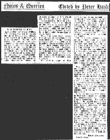

E.W. Barnes at K.E.S.As a schoolboy Ernest William Barnes, who was to become Bishop of Birmingham, showed great prowess as a debater. At King Edward’s School, New Street, he was a prominent member of the Debating Society. He was no less prominent in the activities of the Natural History Society, and an old minutes-book of 1884–94 tells us that Barnes was the geological curator, that he lectured on photography, asked questions about comets, and, on one occasion, caused no little disturbance when he attended a paper by C.Y. Flewitt on “Crocodiles and Alligators”. In his minutes, the then secretary wrote: “At the conclusion of the lecture, a statement of Flewitt’s was disputed by Barnes on totally insufficient authority; the accuracy of Barnes’ remarks being justly called in question by Jones, S.C.” This has then been crossed through and an amendment has been substituted: “Then Barnes got up and with a laudable desire to enliven the proceedings, asked two or three pointed and intelligent questions, which betrayed his keen interest in and evident appreciation of the lecture.” One wonders just what it was that Barnes found to disagree with on the subject of crocodiles and alligators! On another page of the minutes-book is an account by Barnes of a paper called “A Trip to Dover.” In rather scrawly handwriting, he says: At a meeting held Nov. 17 in the museum S.N. Sedgwick gave a paper on “A Trip to Dover”. To use the words of M. Talleyrand, “C’était magnifique.” It was a splendid lucid account of Dover and its neighbours Folkestone & Hythe. The beginning of the paper described an ideal picture of an early morning’s doings during the holidays. The lecturer illustrated his paper by sketches, photographic views and views taken by himself. It is simply impossible to critizise [sic] such a paper adversely. The beauty of the sketches was only equalled by the atrocity of the puns; both contributed to make the paper one of the most enjoyable ever heard, and it was the firm opinion of the audience that that had not the bashfulness of the lecturer intervened a poem of idyllic verse would have crowned the arch of one of the most delightful papers that the English language has ever had the honour!, yea the unmeasurable honour to produce. — Signed ………… (Nov 24 1890). This has been crossed out with an indelible pencil and a footnote added:— “(Written by E.W. Barnes but NOT read)”, and underneath is a slightly less effusive account of the meeting! How did Barnes come to write these minutes? He was never the honorary secretary but I like to imagine that he “borrowed” the book from the unsuspecting official and inscribed his own minutes. Perhaps an old reader might know. E.W. Barnes left New Street in 1893 with a Major Scholarship in Mathematics at Trinity College, Cambridge. He took a First in the second part of the Mathematical Tripos in 1898, and later became President of the Cambridge Union and junior dean of the college. In 1916 he was nominated Master of the Temple by Asquith, and two years later Lloyd George made him a canon of Westminster. It was Ramsay Macdonald who made the choice of Dr. Barnes as Bishop of Birmingham. I personally met Dr. Barnes on two or three occasions. He was both gracious and compelling, a formidable yet kindly personality, and that is how best I shall remember him. |

A slightly edited version was published in the Birmingham Weekly Post, Friday 23rd December 1955 |
Previous chapter || Next chapter || Index || Search